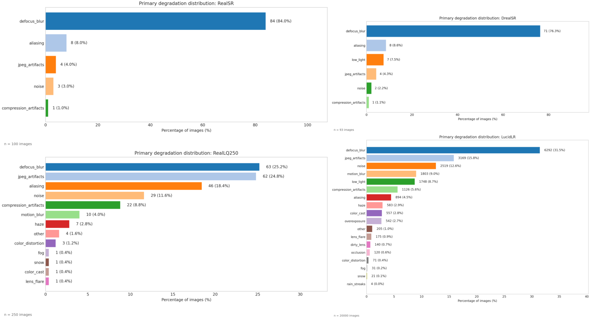
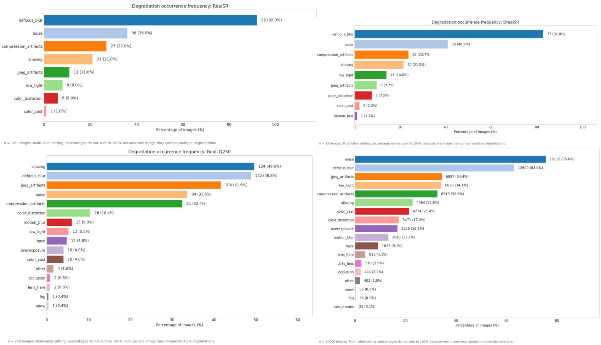
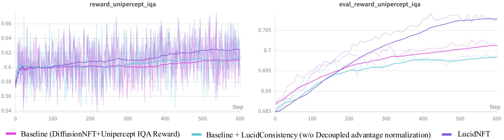

LR faithfulness is missing
Without HR references, no-reference perceptual metrics can reward sharp but unsupported details. Real-ISR needs an LR-referenced signal that is robust to degradations and sensitive to hallucination.
NeurIPS 2026 Preprint
Rollout-group multi-reward fine-tuning for flow-based Real-ISR with LR-referenced faithfulness.
1The Hong Kong University of Science and Technology (Guangzhou) · 2The Hong Kong University of Science and Technology
†Equal contribution · *Corresponding author
Generative real-world image super-resolution can synthesize visually convincing details from severely degraded low-resolution inputs, yet stochastic sampling makes a critical failure mode hard to avoid: outputs may look sharp but be unfaithful to the LR evidence, exhibiting semantic or structural hallucinations.
LucidNFT is a multi-reward RL framework for flow-matching Real-ISR. It introduces LucidConsistency, a degradation-invariant and hallucination-sensitive LR-referenced evaluator trained with content-consistent degradation pools and original-inpainted hard negatives; a decoupled reward normalization strategy that preserves objective-wise contrasts within each LR-conditioned rollout group before fusion; and LucidLR, a large-scale collection of real-world degraded images for robust RL fine-tuning.
Without HR references, no-reference perceptual metrics can reward sharp but unsupported details. Real-ISR needs an LR-referenced signal that is robust to degradations and sensitive to hallucination.
Preference learning compares multiple stochastic restorations conditioned on the same LR image. Scalarizing heterogeneous rewards before normalization can collapse perceptual-faithfulness distinctions.
RL alignment benefits from diverse LR inputs that induce informative rollout variation. Small benchmark datasets and synthetic pipelines limit degradation coverage.

A Qwen3-VL-Embedding-8B backbone with trainable LoRA adapters learns global and native-token representations through pool-based contrastive losses. At inference, it combines global and local LR-SR consistency into an LR-referenced score.
Each reward dimension is normalized within the same LR-conditioned rollout group before fusion. The fused advantage is stabilized at batch level and mapped to the bounded DiffusionNFT reward weight.
LucidNFT uses UniPercept IQA as the perceptual reward and LucidConsistency as the LR-faithfulness reward. Fine-tuning uses LoRA rank 32, 12 rollouts per LR input, and LucidLR as the real-world LR source.

LucidLR is a 20K-image real-world low-quality dataset collected from Wikimedia Commons through its official API. Images are gathered from public low-quality and blurred-image categories, filtered from an approximately 22K-image raw pool with NSFW classification, corrupted-file removal, and manual review.

| Dataset | Pairing | Primary Usage | Type | # Images |
|---|---|---|---|---|
| RealSR | Paired | Testing / Benchmark | Real-captured | 100 |
| DRealSR | Paired | Testing / Benchmark | Real-captured | 93 |
| RealLQ250 | Unpaired | Testing / Benchmark | Real-world | 250 |
| LucidLR | Unpaired | RL / Unsupervised Training | Real-world | 20K |
Experiments evaluate LucidNFT on two flow-based Real-ISR models, LucidFlux and DiT4SR. All methods are evaluated at 1024 x 1024 output resolution with 4x upscaling. The paper reports eight no-reference quality metrics and LucidConsistency as an LR-referenced consistency score without HR ground truth.

| Benchmark | Metric | DiffBIRv2 | SeeSR | DreamClear | SUPIR | DiT4SR | DiT4SR(+LucidNFT) | LucidFlux | LucidFlux(+DPO) | LucidFlux(+LucidNFT) |
|---|---|---|---|---|---|---|---|---|---|---|
| RealLQ250 | CLIP-IQA+ ↑ | 0.6919 | 0.7034 | 0.6813 | 0.6532 | 0.7098 | 0.7124 | 0.7208 | 0.7228 | 0.7465 |
| Q-Align ↑ | 3.9755 | 4.1423 | 4.0647 | 4.1347 | 4.2270 | 4.2358 | 4.4052 | 4.4430 | 4.4855 | |
| MUSIQ ↑ | 67.5313 | 70.3757 | 67.0899 | 65.8133 | 71.6682 | 72.1732 | 72.3351 | 72.4504 | 73.4475 | |
| MANIQA ↑ | 0.4900 | 0.4895 | 0.4405 | 0.3826 | 0.4607 | 0.4719 | 0.5227 | 0.5258 | 0.5443 | |
| CLIP-IQA ↑ | 0.7137 | 0.7063 | 0.6957 | 0.5767 | 0.7141 | 0.7355 | 0.6855 | 0.6917 | 0.7233 | |
| NIQE ↓ | 5.1193 | 4.4383 | 3.8709 | 3.6591 | 3.5556 | 3.5007 | 3.7410 | 3.7785 | 3.2532 | |
| UniPercept IQA ↑ | 65.4760 | 69.2015 | 68.8465 | 68.6430 | 73.0740 | 73.3430 | 70.9300 | 71.1330 | 73.4790 | |
| VisualQuality-R1 ↑ | 4.3428 | 4.5118 | 4.4430 | 4.4265 | 4.6146 | 4.6304 | 4.5474 | 4.5644 | 4.6510 | |
| LucidConsistency ↑ | 0.9609 | 0.9466 | 0.9578 | 0.9522 | 0.9052 | 0.9172 | 0.9237 | 0.9296 | 0.9345 | |
| DRealSR | CLIP-IQA+ ↑ | 0.6476 | 0.6258 | 0.4462 | 0.5494 | 0.6537 | 0.6757 | 0.6516 | 0.6530 | 0.6867 |
| Q-Align ↑ | 3.0487 | 3.2746 | 2.4214 | 3.4722 | 3.6008 | 3.6641 | 3.7141 | 3.7408 | 3.8423 | |
| MUSIQ ↑ | 60.0759 | 61.3222 | 35.1912 | 54.9280 | 63.8051 | 65.1915 | 64.6025 | 64.5607 | 68.1545 | |
| MANIQA ↑ | 0.4900 | 0.4505 | 0.2676 | 0.3483 | 0.4419 | 0.4572 | 0.4678 | 0.4669 | 0.5004 | |
| CLIP-IQA ↑ | 0.6782 | 0.6760 | 0.4361 | 0.5310 | 0.6732 | 0.7111 | 0.6673 | 0.6713 | 0.7073 | |
| NIQE ↓ | 6.4853 | 6.4503 | 7.0164 | 5.9092 | 5.7001 | 5.6329 | 5.0742 | 5.0143 | 4.1788 | |
| UniPercept IQA ↑ | 46.2298 | 50.3414 | 34.2473 | 55.1371 | 58.1290 | 59.9328 | 59.9032 | 59.7782 | 63.7782 | |
| VisualQuality-R1 ↑ | 3.4796 | 3.6116 | 2.5655 | 3.7349 | 3.9603 | 4.0239 | 3.9955 | 3.9828 | 4.1455 | |
| LucidConsistency ↑ | 0.9332 | 0.9275 | 0.9607 | 0.8911 | 0.8438 | 0.8544 | 0.8813 | 0.8890 | 0.8879 | |
| RealSR | CLIP-IQA+ ↑ | 0.6543 | 0.6731 | 0.5331 | 0.5640 | 0.6753 | 0.6881 | 0.6669 | 0.6695 | 0.7151 |
| Q-Align ↑ | 3.3156 | 3.6073 | 3.0040 | 3.4682 | 3.7106 | 3.7959 | 3.8728 | 3.9147 | 3.9918 | |
| MUSIQ ↑ | 61.7751 | 67.5660 | 49.4766 | 55.6807 | 67.9828 | 69.1092 | 67.8962 | 67.9362 | 70.5625 | |
| MANIQA ↑ | 0.4745 | 0.5087 | 0.3092 | 0.3426 | 0.4533 | 0.4654 | 0.4889 | 0.4907 | 0.5284 | |
| CLIP-IQA ↑ | 0.6806 | 0.6993 | 0.5390 | 0.4857 | 0.6631 | 0.6963 | 0.6359 | 0.6427 | 0.6936 | |
| NIQE ↓ | 6.0700 | 5.4594 | 5.2873 | 5.2819 | 5.0912 | 4.8332 | 4.8134 | 4.6804 | 3.9526 | |
| UniPercept IQA ↑ | 53.6550 | 58.0538 | 46.7850 | 56.6063 | 63.2025 | 64.8425 | 60.0925 | 60.4775 | 64.7588 | |
| VisualQuality-R1 ↑ | 3.8928 | 4.0635 | 3.5028 | 3.7821 | 4.1953 | 4.2429 | 4.1376 | 4.1503 | 4.3389 | |
| LucidConsistency ↑ | 0.9544 | 0.9138 | 0.9475 | 0.9141 | 0.8318 | 0.8498 | 0.8853 | 0.8932 | 0.8923 |


| Evaluator | Criterion | Agreement | Recall@1 | Filter@1 |
|---|---|---|---|---|
| CLIP-IQA | Perceptual Quality | 0.391 | 0.186 | 0.093 |
| MUSIQ | Perceptual Quality | 0.349 | 0.116 | 0.093 |
| Q-Align | Perceptual Quality | 0.322 | 0.093 | 0.047 |
| UniPercept-IQA | Perceptual Quality | 0.322 | 0.070 | 0.093 |
| Qwen3-VL-Embedding-8B | Generic Semantics | 0.643 | 0.465 | 0.302 |
| LucidConsistency | LR Faithfulness | 0.690 | 0.558 | 0.558 |
| Method | UniPercept ↑ | VQ-R1 ↑ | NIQE ↓ | LucidConsistency ↑ |
|---|---|---|---|---|
| LucidFlux baseline | 70.930 | 4.547 | 3.741 | 0.9237 |
| (A) IQA-only RL | 71.538 | 4.601 | 3.514 | 0.9259 |
| (B) + Frozen semantic reward | 71.366 | 4.596 | 3.529 | 0.9298 |
| (C) + LucidConsistency reward | 71.214 | 4.593 | 3.547 | 0.9341 |
| (D) + Decoupled norm. | 72.703 | 4.633 | 3.372 | 0.9356 |
| (E) + LucidLR | 73.479 | 4.651 | 3.253 | 0.9345 |



LucidNFT aligns stochastic restorations not only toward perceptual realism, but also toward LR-conditioned faithfulness. Experiments across two flow-based Real-ISR backbones show improved perceptual quality while generally maintaining LR-referenced consistency, suggesting a practical route toward more reliable generative restoration.
@article{fei2026lucidnft,
title={LucidNFT: LR-Anchored Multi-Reward Preference Optimization for Flow-Based Real-World Super-Resolution},
author={Fei, Song and Ye, Tian and Chen, Sixiang and Xing, Zhaohu and Lai, Jianyu and Zhu, Lei},
journal={arXiv preprint},
year={2026}
}